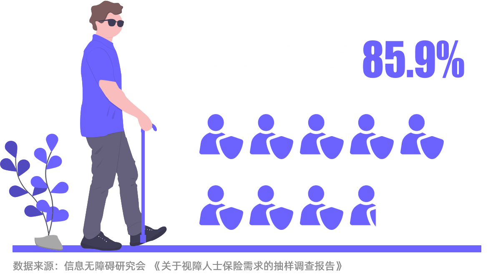

视力障碍，与你我有关
视力障碍，是关于每一个人的事情
数据统计时间：2022年5月31日
-
我国儿童青少年近视率随着年级的升高快速增长，我国儿童青少年总体近视发病形式严峻。高度近视是致盲性眼病之一，容易导致一系列严重的并发症，应该引起高度警惕和重视。
-
在人口老龄化的背景下，各类老年性视力缺陷患病年龄提前。目前中国的主要致盲性眼病疾病谱已由过去的沙眼、白内障转变为青光眼、眼底病等年龄相关、代谢相关性眼病。如按照目前中国约有1.9亿65岁以上的老年人数推算，中国有近4000万的眼底病患者。
-
糖尿病、高血压、动脉硬化、高血脂等的慢性病的病变也会在眼部体现。
我国是全球糖尿病患者数量最多的国家，以糖尿病为例，血糖高能引起包括微血管和大血管在内的血管病变，而这类病变则会导致视力下降、飞蚊症或视物变形等症状，重者后期可能导致视力丧失。点击查看我国视力健康现状视力障碍者在中国也并不是一个少数群体。同时，表达对视障群体的关注，我们也会发现一个更加包容、实用的世界。上述讨论的视力障碍，让我们更容易想到的是关于身体健康状态的永久性残疾。但这种定义早已过时。点击查看定义有时障碍是暂时性的，一个平时身体健全的人，在特定情景下，也会对残障人士的局限性感同身受。-
开车
开车视野变窄，无法使用手机
-
没戴眼镜
近视者不戴眼镜视线模糊
-
屏幕摔碎
手机屏幕摔碎后影响显示功能，阻碍使用
点击查看为永久性残障人士设计似乎很麻烦，但由此产生的设计实际上可以惠及更多的人。高对比度屏幕设置最初也是为了让视力受损的人受益。但今天，许多人在明亮的阳光下使用设备时，会受益于高对比度设置。 这不仅是对弱势群体的照顾，也是当每个人都可能遇到视觉缺陷会阻碍生活和发展时，能大大弱化这种障碍。帮“盲”，从消除误解开始
关注他们的真实状况，才是“看见”
借助盲杖，他能够独立行走，探索世界万千。借助读屏，他也能够用微信、点外卖。他也会有着一份工作，朝九晚六。盲人有时候，和普通人并没有太大的区别。 而大众常对他们存在一些误解。盲人的世界是一片黑的吗？
盲人的世界更像是“空”
数据来源：知乎问题“盲人的世界是一片黑的吗”下方回答，共计1781条。
数据统计时间：2022年6月1日
数据说明：对回答内容进行词频分析、语句摘录工作，重点对“眼中是黑色的”、“盲人不会做梦”这两个刻板印象进行摘录。点击查看盲人的描述数据说明：知乎问题“盲人的世界是一片黑的吗”下方1781条回答的典型内容的摘录。盲人看不见，所以不会拍照
盲人也会用“非视觉摄影”记录自己的生活
视障人士虽然看不清或看不到空间中的事物，但可以去闻，去尝，去听，然后用照片的形式呈现出他们对于这个世界的理解，以沉浸式的方式创作摄影作品。非视觉摄影在拍摄时也不同于我们常规的拍摄，拍摄者可将设备紧贴自己的身体，同时也要控制设备的平衡，以达到可以精确的还原自己感知的画面。之后经过特殊处理，打印成有凹凸质感的照片，就可以让拍摄者更好的感知自己的作品。2006年，“感觉之眼”盲人教育机构在墨西哥成立，那时，没人想过会有如此之多的盲人开始摄影。他们只是将相机稳稳地放到盲人的手中，让盲人在拍摄的过程中放下失去的沮丧，在更多的交流与反馈中，冲破自身的生存困境。一双赤脚在沙滩上
Creative网的影子投在玩具摔跤手上
Creative原木上的蜗牛
People
蓝天下背光的蒲公英
Nature黑色背景上的蓝光
Branding收集纸板的成年人的手
People图片来源：感官之眼（https://www.ojosquesienten.com/）盲人无法独自出门
依赖盲杖、导盲犬等的出行辅助工具，
能够独立行走
我们爬取了“争渡”“爱盲”两个视障者论坛的126798条帖子，整理了235条数据进行编码统计。 数据来源：争渡论坛、爱盲论坛、帮盲论坛三个盲人论坛的帖子
数据来源：争渡论坛、爱盲论坛、帮盲论坛三个盲人论坛的帖子
数据统计时间：2022年6月1日
数据说明：筛选出关于“出行”的帖子进行聚类分析，共计235条。而实际上，仍有一大部分盲人并不经常出门。盲道占用以及无障碍设施不完善的情况，严重干扰着盲人的出行安全。我们需要更包容的环境，让盲人放心出门。盲人能够从事的职业只有按摩
实际上，盲人也能做咖啡师、工程师，
他们的就业路径非常多元
当下盲人的就业已逐渐呈现出多元化的发展趋势，有盲人从事计算机软件开发、翻译、钢琴、教师等工作，也有盲人在互联网企业中从事销售等岗位。借助读屏软件，他们能够应付大部分办公工作。
谈谈网文吧。依靠读屏软件，阅读和码字应该说没有障碍。唯一的问题是错字。但是现在一些网站的后台已经有自动改错的功能，可以改正一部分。也可以找亲友帮忙修改。盲人朋友还有一个优势，那就是很多盲人用的都是双拼。综上，盲人和明眼人一样，入行不难，难的是出成绩。一百个新人，最后能挣到钱的可能百中无一。数据不准确，总知就是很难。 然后就算入行了，也很可能是收入不稳定、熬夜、全年无休的状态。可能没有想象中美好。 若要尝试，还是推荐闲时兼职吧。
以上，来自一个码了六百多万字，挣了些稿费，但正在被不断变化的市场淘汰的盲人写手。
@指间流水 网文写手数据来源：整理自知乎问题“盲人可以做什么工作”下的回答
当我用一部三年之前购买的iPhone 8写下这个答案的时候，那么我可不可以也去微信公众号进行创作？
当然可以，这叫做微信公众号博主。
我是盲人烟锁，一个草根微信公众号博主，失去光明之前是一名大学生村官，在云南省普洱市的一个小山村工作。如果你也喜欢农业农村农民，如果你也愿意倾听我的故事，如果你也愿意为我的公众号创业出谋划策、添砖加瓦， 如果你也愿意在我摸索的时候给我指一个方向，那么就来关注我吧，微信公众号名称：立烟锁窗集，期待您的光临。
@立烟锁窗集 自媒体博主数据来源：整理自知乎问题“盲人可以做什么工作”下的回答
视力部分或完全缺损，只是盲人的诸多特征其中之一。
一位视力完全缺损的学者，拥有法学博士学位和MBA学位。她的办公室就在我楼上，经常看到她与导盲犬从电梯上下。 然而人们还是常常一叶蔽目，用“盲”这一个方面代表了整个人：“她都看不见，怎么开车/摆放货物/处理文书/写公函……？”
人类没谁肉眼看得见细菌，拦着谁用显微镜等设备去研究细菌微生物细胞壁了？人类没谁肉眼看得见电磁波，所以发明了雷达。 人类没谁能把头伸到病人关节里用肉眼看着动刀子，所以有了关节镜帮助医生看清楚些。
@苏中彦 学者数据来源：整理自知乎问题“盲人可以做什么工作”下的回答
盲人可以借助屏幕阅读器使用电脑，绝大多数编程工具也可以正常访问，所以，盲人掌握编程语言是没有问题的。
个人正在学WEB前端开发，目标是以后国内重视WEB前端页面的Accessibility优化后从事相关工作。以现在的状况，盲人程序员在国内的互联网环境下，很难找到工作。编程是一向要求很高的职业，在我所知的盲人程序员中， 真正有能力可以达到国内互联网公司offer水平的程序员非常少，可能不超过10人。另，国内的各大互联网企业中，还没有盲人程序员。利益相关，盲人。
@殷晓波 程序员数据来源：整理自知乎问题“盲人可以做什么工作”下的回答平等参与，从隔离到融合
推开多元就业的门
经常容易忽略的一点是：盲人，对按摩的想法是什么？在从盲人论坛上爬取的帖子中，我们提取了1455条提及“按摩”的内容进行情感分析，其中69%的呈现消极意见。数据来源：争渡论坛、爱盲论坛、帮盲论坛三个盲人论坛的帖子
数据统计时间：2022年6月1日
数据说明：筛选出关于“按摩”的帖子进行情感分析，共计1455条。在呈现出消极情绪的帖子中，提及最多的是：在谷歌的信息无障碍设计师、残障人士权益倡导者夏冰莹看来，“任何一个健全人都不可能接受一辈子只做一项工作，为什么放到盲人身上，我们就觉得是理所当然的，为什么盲人就只能做按摩？”解决盲人就业的多元性问题，前提是需要依赖是教育观念的转向——盲人高等教育与针灸按摩形成了高度匹配的现状，隔离教育像无形的大网束缚住了视障者的发展。 一加一残障人公益集团合伙人蔡聪曾在采访中称：“视力残疾者的教育平权在近年来才得到重视。在此之前，教育像是一种绑定，因为它深刻地束缚了就业选择，将人们指向盲人按摩这条唯一的出路。” 长期以往，盲人从事做按摩的理由通常被认为是“盲人适合做按摩”。点击图例中的小白点关闭高考报考人数试试社会也需对视障人士的观念有所改观，为视障者提供更多的岗位。当我们过于强调视障群体的特殊性时，便将其与普通大众隔离开来，在不知不觉中，忽略了视障者也有像常人一样的渴求。 中国残疾人就业创业网络平台提供给残疾人的2900份岗位信息中，视力残疾人群的岗位仅有356份，占12.28%。数据来源：中国残疾人就业创业网络平台的招聘信息
数据统计时间：2022年6月1日
数据说明：对356条面向视力残疾提供的岗位信息进行人工编码分类，形成桑基图的原始数据。视障人士等待着一个“成为普通人”的机会，到更广阔的平台去工作、学习和交流。人们常以“特殊”之名的区隔，让“按摩”抹去了视障者也有生命多元历程的可能。视障者的疆域，不应只有一间按摩房的大小。 让更多视障群体能够被“看见”，拥有更多的社会资源和机会，他们才能过上像普通人一样的平凡的一天。而普通背后代表着的平等，弥足珍贵。推开“互联”世界的门
教育，是视障群体获得知识的一个途径。而互联网，则是另外一种渠道。盲人也会用各种APP，也有自己的论坛。数据来源：争渡论坛、爱盲论坛、帮盲论坛三个盲人论坛的帖子
数据统计时间：2022年6月1日
数据说明：通过词频分析，确认论坛视障用户的常用APP。他们在知乎，回答着网友们对视障群体的好奇与疑问。互联网，打开了大众和特殊群体互相了解的窗口。-
过边检/海关时遇到过什么难忘的事情？我不记得是17年还是18年的事了。我和我弟弟和我表哥去香港，在罗湖口岸走自助通道出中国边检，我先过第一，我自己刷卡打开了第一道门，向前走验证人脸识别通关等我弟弟。我弟弟通关之后就拉着我的手，然后我就听到一个边检说：“哇，这孩子眼睛看不到居然可以走自助通道。”他说的就是我，然后我和我弟弟都笑了。因为家人是不可以协助我使用自助通道的，所以我在使用自助通道之前就要在家里上网查自助通道的使用方法然后要把使用方法记住。盲人的生活到底是什么样的体验？体验就是，不方便，去哪里都要人带。 因为我不方便出去，所以我一直都在家对着手机电脑。有些网友说想见我本人的，那你们就死心吧，这个绝对是不可能的，要见我本人的话那就只能看我的图片和听我的声音，哈哈。视障人士的一天是怎样度过的呢？早上起床之后的第一件事就是检查锁屏界面，看下有没有人发微信给我，如果有的话就要马上回复。然后就是去刷牙洗脸那些啦。之后就上Google看新闻，上YouTube听人玩游戏。我喜欢在YouTube上搜索游戏机的游戏，因为我看不到，好多游戏机的游戏我只能听人玩，听他们的视频就等于我也玩了一次。 有时候我会听街头霸王或者是拳皇的比赛。有时候会听台湾腔的新闻。中午下去吃饭，吃完之后又回房间继续泡在YouTube里面，一天就这样过去了。
-
盲人能不能上网？能啊。我是完全看不到的，我都可以用iOS的Safari上网，玩iMessage，玩微信，玩知乎都可以。上网很简单，如果是要打字聊天的话就用拼音输入法。我很幸运，因为我在盲人学校里面读过九年义务教育，好多盲人都是没读过书的。像我这种有读过九年义务教育的，那我们就要学拼音字母表。就是我要背，我wo，是shi之类的，背熟了之后就可以输入了。 至于选字，屏幕朗读工具会读给你听。就是说我输入shi，然后在选字的地方就会读是否的是，事情的事，选中之后就可以输入了。如何盲文输入到计算机中？如果你是说在电脑上打字的话，直接用键盘输入拼音就可以了。因为我们盲人在小学阶段学电脑的时候，老师就会要我们背键盘上字母的所在位置，就是要背a s d f g h j k l。市面上也有一些键盘是有盲文的，就是每一个按键都有盲文的英文字母，但是我不需要这种键盘，因为我已经把字母背熟了。 如果你是说要打印盲文试卷给学生写作业的话，有专门的输入工具。但是我问过一些老师，她们说不需要输入盲文点位，直接在软件里面点一个按钮，就可以把汉字转换成盲文Q，然后把文件复制到U盘，拿到文印室给里面的老师打印就可以了。
-
残疾人想跟健全人谈恋爱就那么的难吗？真的好难。我是视障全盲。我不会追求这么多，我也不敢追求这么多。我只需要有人回复就够了。 以前我有过恋爱的感觉吧，就是有一段时间，有一个女网友天天都发早安晚安的。 我们有时候会聊一些日常的内容。那时候我就觉得很开心。那种应该就是恋爱的感觉吧残疾人如何才能遇到另一半呢？我怎么知道啊。我是不相信有缘论的。残疾人跟正常人根本就比不了。我已经不向往爱情了，等我到了生命最后阶段之后，有人把我服务好就可以了。现在我就是每天都在家，如果我的家人有空带我出去玩的话， 那我也会出去。没人带的时候就每天都在家，反正我都孤独惯了。那可能会有些女生在评论里面说，没事的，只要缘分到了就会有了。那我就反问你，我的眼睛瞎了，是不是我一直在家里面就会突然有一个女生过来找我呢?是不是因为我眼睛瞎了，而且还会打字，之后就会有人突然喜欢我呢？还有，就是，有没有女生可以接受一个瞎子，然后照顾他一辈子，而那个瞎子又没有工作，而且也不知道怎么回应女生的爱，就是说不知道女生做这个动作背后的暗示是表示什么。我也不太会表达那个， 那你们就将就着看吧。如果你们看不懂我写的回答，那就是看不懂了啦，我也没办法了啦
-
一直期待别人来拯救自己怎么办？我也会期待别人来救赎。可是我的眼睛看不到呀，出不去社交呀，只能每天都在家里面。 反正都不会有人喜欢我。现在我也觉得没什么希望了。我的结局已经定好了。如果我带了临终阶段，如果社工师问我这一生有什么成就的话，那我就会回答什么都没有。接下来我也不知道怎么跟社工师聊天。长时间独处会造成自闭和抑郁吗？我不知道会不会。我每天都在家，晚上睡觉的时候会有孤独感，而且连呼吸都觉得累，感觉肺有点不舒服。我也想出去，可是我的眼睛是完全看不到的，我也不敢像其他的盲人那样走出去。我小的时候是想出去，但是国内的无障碍很差，我就没胆子出去了。如果你们现在问我想不想出去，我的回答是不想出去。而且我现在什么欲望都没有了，青春期的时候还是有性欲的。补充: 呼吸觉得累，肺有点不舒服，只是发生过一两次而已。盲人怎么明白自己是看不到的呢？每个盲人都不一样。我是因为每次玩GBA版的超级马里奥都输掉才知道我的眼睛是完全看不到的。我带了临终阶段，如果社工师问我这一生有什么成就的话，那我就会回答什么都没有。接下来我也不知道怎么跟社工师聊天。真的很害怕有一天会失明怎么办？我的眼睛完全看不到。我还怕我突然全身都动不了，打不了字，我还怕我爸妈突然死了就没人照顾我了。
数据来源：整理自知乎用户@好奇宝宝（先天全盲）的294条回答“信息无障碍”起源于西方发达国家，译自“Accessibility”，指任何人在任何情况下都能平等、方便、无障碍地获取信息并利用信息。主要用于互联网环境，互联网产品通过进行易用性、可用性等优化， 可以被老年人、视障者、听障者、读写障碍人士等用户顺畅使用，同时可以更高效、更便捷地被所有用户使用。在各种无障碍技术的催化下，科技改变了视障群体的生活方式。视障者可以通过听读屏的声音，打车、订外卖、电子支付，大大提高获取信息的效率，也加强了与现实世界的联结。盲人摸读每小时的阅读速度一般在10000字至15000字， 与健全人的阅读速度相比慢很多。而在书写过程中，视障人群首先要熟练记忆点位和音节，同时需要盲文笔、盲文手写板、盲文作图工具、橡胶垫等各种工具。而以iPhone的旁白为例，语速最快一小时可以读取30000多字。 一个社会，信息无障碍程度越高，视障人士就能越好地与明眼人一样获取信息。盲人摸读速度盲人听读速度以常见的A4纸举例，一面A4纸面按普通排版方式来算，可容纳七八百个汉字。如果要制作成盲文书籍，一面只能排300个字左右。一部《红楼梦》，普通人阅读的纸质书，人民文学出版社出版，上下两册。盲文版呢？牛皮纸做成的大书，厚厚16册。 在科技互联网的帮助下，会更有多人可以拥有“信息自由”。 信息无障碍，不是要给特殊群体专门设计产品，而是以无障碍设计的理念，促进为了更好的融合。点击图表互动试试科技创新本来就是以人为本，提供便利，不应抛弃少部分群体。为视障者修建了一条互联网盲道，也能缩短他们和普通人之间的差距，拓宽他们生活的边界。 无障碍，是每一个人都能被善待。过往媒体报道中，视障人士是感动励志的挑战者，或是命运悲惨的失意者。
在科技互联网的帮助下，会更有多人可以拥有“信息自由”。 信息无障碍，不是要给特殊群体专门设计产品，而是以无障碍设计的理念，促进为了更好的融合。点击图表互动试试科技创新本来就是以人为本，提供便利，不应抛弃少部分群体。为视障者修建了一条互联网盲道，也能缩短他们和普通人之间的差距，拓宽他们生活的边界。 无障碍，是每一个人都能被善待。过往媒体报道中，视障人士是感动励志的挑战者，或是命运悲惨的失意者。
在这些动容的文字外，还有更多的视障者
也和普通人一样，正常地在过日子。
特殊的刻画，让社会加深了对残障群体的误解，
他们总是显得那么遥远又陌生。
只有当我们意识到了这个“看不见”却区隔彼此的藩篱，
真正了解视障群体的生活和想法，
我们才能帮助他们跨越“看不见”带来的限制，
一起创造一个更加包容、友善的世界。
指导老师赵甜芳作者（按姓氏首字母排序）蔡楷 范诗琳 关梓莹 李绮雯 -